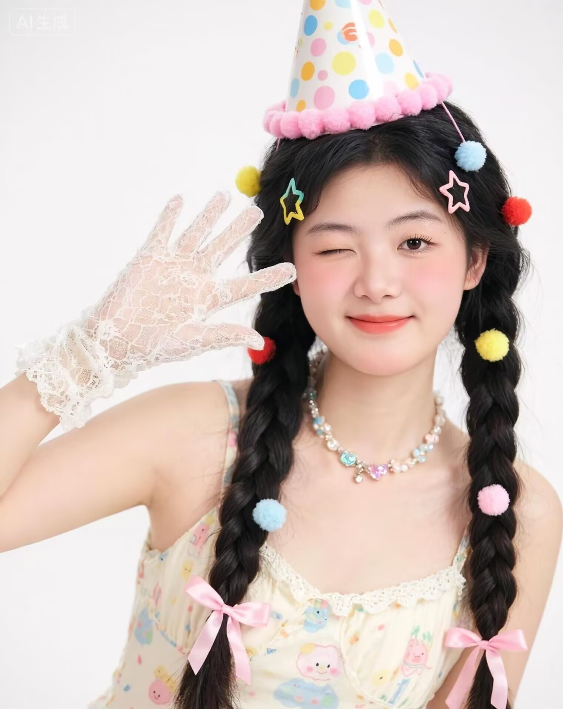

2025年-2029年 就读于淮阴师范学院，大一在读，主修广播电视学专业。在校期间学习态度端正，成绩良好，第一学期荣获校级二等奖学金，注重理论结合实践，不断提升自身专业素养与综合能力。
（可补充GPA、主修课程、获奖情况等）
1. 实践项目一（食品安全科普短视频）
• 负责内容策划、AIGC生成、剪辑等工作，产出视频作品：点击查看视频链接
2. 实践项目二（节气科普短视频）
• 负责内容策划、AIGC生成、剪辑等工作，产出视频作品：点击查看视频链接
1. 校园经历一
• 积极参与校园文体活动、文艺宣传类活动，擅长文案撰写、素材整理、内容排版等工作。
2. 校园经历二
• 主动参与专业实训课程，熟悉影视基础拍摄、图文排版、新媒体内容制作流程。
专业技能：
•办公技能：熟练使用Word、Excel、PPT，文档整理、文案撰写能力良好
•网页制作：掌握HTML/CSS基础，可完成简单网页设计与开发
•设计剪辑：掌握PS基础修图、简单视频剪辑，擅长海报文案创作
自我评价：性格温和踏实，做事认真负责，待人真诚友善。主修广播电视学专业，具备扎实的传媒专业基础，热爱文案创作、新媒体内容制作与影视相关工作。善于整理归纳资料，执行力强，学习态度端正，能够快速适应新环境与新工作，愿意虚心学习积累经验，积极完成各项工作任务。
•学习态度端正自律，接受新知识速度快，善于总结梳理知识要点。能够自主钻研专业相关软件与行业知识，快速掌握实操技巧。乐于虚心请教积累经验，面对陌生领域可快速上手适配，持续提升自身综合素养与专业实操水平。